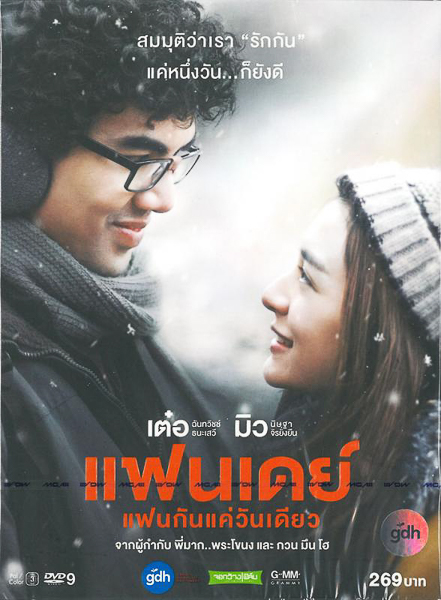

แฟนเดย์..แฟนกันแค่วันเดียว
สำหรับหนังเรื่อง แฟนเดย์..แฟนกันแค่วันเดียว เป็นภาพยนตร์ไทยแนวโรแมนติก-ดราม่า และเป็นภาพยนตร์เรื่องแรกของจีดีเอช ห้าห้าเก้า ผลิตโดยจอกว้างฟิล์ม กำกับโดย บรรจง ปิสัญธนะกูล นำแสดงโดย ฉันทวิชช์ ธนะเสวี และ นิษฐา จิรยั่งยืน
โดยเรื่องย่อของหนังแฟนเดย์มีอยู่ว่า เด่นชัย (เต๋อ ฉันทวิชช์) เจ้าหน้าที่ไอทีสุดเนิร์ดประจำออฟฟิศวัย 30 ผู้จะมีตัวตนในสายตาพนักงานคนอื่นแค่เวลาอุปกรณ์คอมพิวเตอร์เสีย ในชั่วโมงทำงานที่แสนเร่งรีบไม่มีใครสนใจแม้แต่จะจำชื่อของเด่นชัย จนเขาแอบน้อยใจอยู่บ่อย ๆ จนกระทั่งวันที่เขาได้ไปซ่อมพรินเตอร์ให้ นุ้ย (มิว-นิษฐา) มาร์เกตติ้งสาวผู้น่ารักที่เขาประทับใจเธอตั้งแต่แรกเห็น ผู้จดจำชื่อจริงของเขาได้ เด่นชัยตกหลุมรักความน่ารักและจริงใจของนุ้ยที่ทำให้เขารู้สึกเหมือนมีตัวตนขึ้นมา แต่ก็ทำได้เพียงเฝ้าเก็บรายละเอียดและดูแลเธออยู่ห่าง ๆ เพราะรู้ดีว่าคนอย่างเขาคงได้หวัง นุ้ยคงไม่มาสนใจ แต่แล้วเมื่อบริษัทของเด่นชัยพาพนักงานไปเที่ยวเอาท์ติ้งยังสกีรีสอร์ทที่ฮอกไกโด เด่นชัยได้ขอพรกับระฆังแห่งความรักของรีสอร์ทให้เขาได้เป็นแฟนกับนุ้ยแค่วันเดียวก็ยังดี โชคชะตาเล่นตลกเมื่อนุ้ยประสบอุบัติเหตุจากสกีจนหมดสติ พอนุ้ยฟื้นกลับมีอาการโรคความจำเสื่อมชั่วคราวที่เรียกกว่าโรค TGA ซึ่งเป็นโรคความจำเสื่อมที่จะมีอาการอยู่เพียงแค่ 1 วันเท่านั้น เด่นชัยคิดว่านี่เป็นโอกาสเดียวที่คนอย่างเขาจะได้ใกล้ชิดกับนุ้ย เขาตัดสินใจสวมรอยหลอกนุ้ยว่าทั้งสองเป็นแฟนกันและอยู่เที่ยวต่อกันเพียงสองคน เด่นชัยตั้งใจว่าจะพานุ้ยไปเที่ยวในทุก ๆ ที่ ที่เธออยากไปในฮอกไกโด ใช้เวลาสุดพิเศษของเขากับเธอในฐานะแฟนแม้ว่ามันจะเป็นการเป็นแฟนกันเพียงแค่วันเดียวก็ตาม...